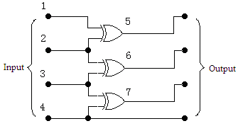

Problem D
Digital Logic
Your task is to design a 4-input 4-output digital circuit, given some 2-input 1-output gates.
Every gate is described by three 0-1 integers Y00, Y01 and Y11, the output of the gate when
there are exactly 0, 1 and 2 of the inputs are set to 1. Note that all the gates are symmetric, so if there is exactly one input
is set to 1, the output is the same no matter which one is set. Make sure that both inputs of each gate are connected to the
output of another gate or a signal source, since the output will be unpredictable if at least one input is dangling.
Be aware that the output of a gate can never go back to its input either directly or indirectly (i.e. the circuit should not
contain a directed cycle).

To make your design as simple as possible, you should use minimal number of gates. It is guaranteed that the circuit
could be designed with at most 6 gates.
Input
The input consists of at most 30 test cases. Each case contains a single integer n (n < 6), indicating there are n
kinds of gates. Each of the n lines contained four integers, mi, Y00, Y01, Y11,
the number of available gates of this kind, the output values when exactly 0, 1, 2 inputs are set to 1.
There are at most 10 gates in total (i.e. the sum of mi will not exceed 10). The next line contains 16 integers
Y0000, Y0001, Y0010, ..., Y1111, the output values for each possible
input combination. Yprqs's binary form is the output of the circuit when the four inputs are p, q, r, s respectively.
That is, if Ypqrs's binary form is abcd, then the four outputs are a, b, c, d respectively.
The last case is followed by a single zero, which should not be processed.
Output
For each test case, print the case number and an integer p, the minimal number of gates required. The next p lines each contains four
integers s, k, a and b, where s is the serial number of the gate (inputs of the entire circuit are numbered 1~4,
gates are numbered 5~p+4), k is the type number of the gate (gate types are numbered 1~n in the same order as they appeared in the
input), a and b are serial numbers of two inputs of the gate. It should be satisfied that a < s and b < s.
The last line should contain four integers: the serial numbers of the gates of four outputs (should be all between 1 and p+4). There should be exactly one empty line after each case.
Sample Input
1
5 0 1 0
0 3 6 5 12 15 10 9 8 11 14 13 4 7 2 1
1
2 1 1 0
8 12 10 14 9 13 11 15 8 12 10 14 1 5 3 7
0
Output for the Sample Input
Case 1: 3
5 1 1 2
6 1 2 3
7 1 3 4
5 6 7 4
Case 2: 1
5 1 2 1
5 4 3 2
Rujia Liu's Present 2: A Big Contest of Brute Force
Adapted from Chinese Team Selection Contest for IOI2001, with test data enhanced